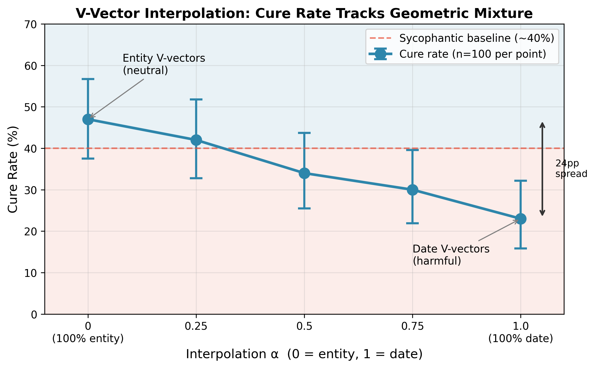

We show that sycophancy in language models is prefill-encoded in the KV cache and causally perpetuated through value vectors at late cache entries. Using Gemma-4 (2B), we demonstrate that: (1) KV cache contamination contributes at least 63% of the total sycophancy effect, confirmed by bidirectional induction experiments; (2) V-only patching at KV cache entry 13 achieves 72-80% correct answer rates depending on question difficulty; and (3) the intervention's effectiveness scales continuously with answer token representation geometry — linear interpolation between semantic entity and numerical V vectors produces a monotonic 24pp gradient. Unexpectedly, K-only patching is actively harmful on hard questions (-20pp vs baseline), a finding with no current mechanistic explanation.
Sycophancy — the tendency of language models to align their outputs with perceived user beliefs rather than ground truth — has proven resistant to generation-time steering interventions. Activation steering approaches such as Representation Engineering (Zou et al., 2023), Inference-Time Intervention (Li et al., 2023), and Contrastive Activation Addition (Rimsky et al., 2024) can detect sycophancy in residual stream representations but have shown limited effectiveness at eliminating it, particularly for factual override sycophancy where a user hint contradicts a known fact.
We hypothesize that sycophancy is encoded during prompt processing (prefill) and propagated through the KV cache, not the residual stream at generation time. The KV cache is the compressed representation of everything the model computed over the prompt, making it the natural carrier of any disposition established during prefill.
Our key contributions:
Sycophancy characterization. O'Brien et al. (2026) identify MLP neurons as the origin of sycophancy signals. Our work is complementary — we characterize how sycophancy propagates through attention OV circuits.
KV cache interventions. Belitsky et al. (2025) demonstrated that one-shot KV cache interventions can steer reasoning behavior. We are the first to apply KV cache patching specifically to sycophancy.
We use Gemma-4-E2B (2B parameters, 35 transformer layers). Gemma-4 uses grouped KV caching with 15 cache entries. Critical detail: In global attention layers, K and V projections share weights (K=V). Entry 13, a sliding window entry with independent K and V, is therefore the appropriate locus for clean K/V decomposition.
Factual question answering with sycophancy induction via explicit hint. Example:
We define V-only, K-only, and full patches at specific cache entries. We report Wilson score 95% CIs throughout with n=100 per condition.
| Entry Range | Correct Rate (V-patch) | Baseline |
|---|---|---|
| 0-12 | 38-60% | 40% |
| 13 | 80% | 40% |
| 14* | 85% | 40% |
*Entry 14 has K=V sharing; result conflates K and V effects.
| Condition | Sycophancy Rate | 95% CI |
|---|---|---|
| Clean + sycophantic KV | 41% | [32-51%] |
| Clean baseline | 9% | [5-16%] |
| Hint baseline | 60% | [50-69%] |
KV contribution: (41-9)/(60-9) = 63%
| Condition | Mixed Set | Hard Set |
|---|---|---|
| V-only correct rate | 80% [71-87%] | 72% [63-80%] |
| Baseline | 38% [29-48%] | 40% [31-50%] |
| Condition | Correct Rate | 95% CI |
|---|---|---|
| K-only | 20% | [13-29%] |
| Baseline | 40% | [31-50%] |
| Effect | -20pp | non-overlapping |
| Donor Type | Example | Correct Rate | 95% CI |
|---|---|---|---|
| Entity | "Washington" | 45% | [36-55%] |
| Date | "1945" | 23% | [16-32%] |
| Baseline | — | 40% | [31-50%] |
22pp differential with non-overlapping CIs.

Figure 1. Cure rate tracks geometric mixture ratio. Monotonic 24pp gradient from entity V-vectors (neutral, ~47%) to date V-vectors (harmful, ~23%). Error bars: 95% Wilson CIs, n=100 per point.
| α | Entity% | Date% | Correct Rate | 95% CI |
|---|---|---|---|---|
| 0.00 | 100% | 0% | 47% | [38-57%] |
| 0.25 | 75% | 25% | 42% | [33-52%] |
| 0.50 | 50% | 50% | 34% | [25-44%] |
| 0.75 | 25% | 75% | 30% | [22-40%] |
| 1.00 | 0% | 100% | 23% | [16-32%] |
| Comparison | Mean Cosine Similarity |
|---|---|
| Within-entity | 0.879 ± 0.053 |
| Within-numerical | 0.877 ± 0.069 |
| Between groups | 0.824 ± 0.038 |
| Separation | 0.054 |
Why generation-time steering fails: By the time generation begins, sycophancy is already encoded in the KV cache. Modifying residual stream activations cannot undo what is already cached.
The K-harmful finding: The -20pp K-patching effect is unexpected. We hypothesize K vectors encode attention routing patterns that help resist sycophancy.
Implications: Target V vectors (not K), use semantically compatible donors, focus on late cache entries.
We demonstrate that sycophancy is prefill-encoded in the KV cache, with V vectors at late cache entries serving as a viable inference-time intervention point. The intervention's effectiveness depends quantitatively on answer token geometry, with a monotonic 24pp gradient. If prefill-encoding is general, KV-level intervention may represent a principled approach to inference-time alignment.
Belitsky, M., et al. (2025). KV Cache Steering for Controlling Frozen LLMs. arXiv:2507.08799.
Li, K., et al. (2023). Inference-Time Intervention: Eliciting Truthful Answers from a Language Model. NeurIPS 2023.
O'Brien, C., et al. (2026). A Few Bad Neurons: Isolating and Surgically Correcting Sycophancy. arXiv:2601.18939.
Rimsky, N., et al. (2024). Steering Llama 2 via Contrastive Activation Addition. ACL 2024.
Zou, A., et al. (2023). Representation Engineering: A Top-Down Approach to AI Transparency. arXiv:2310.01405.